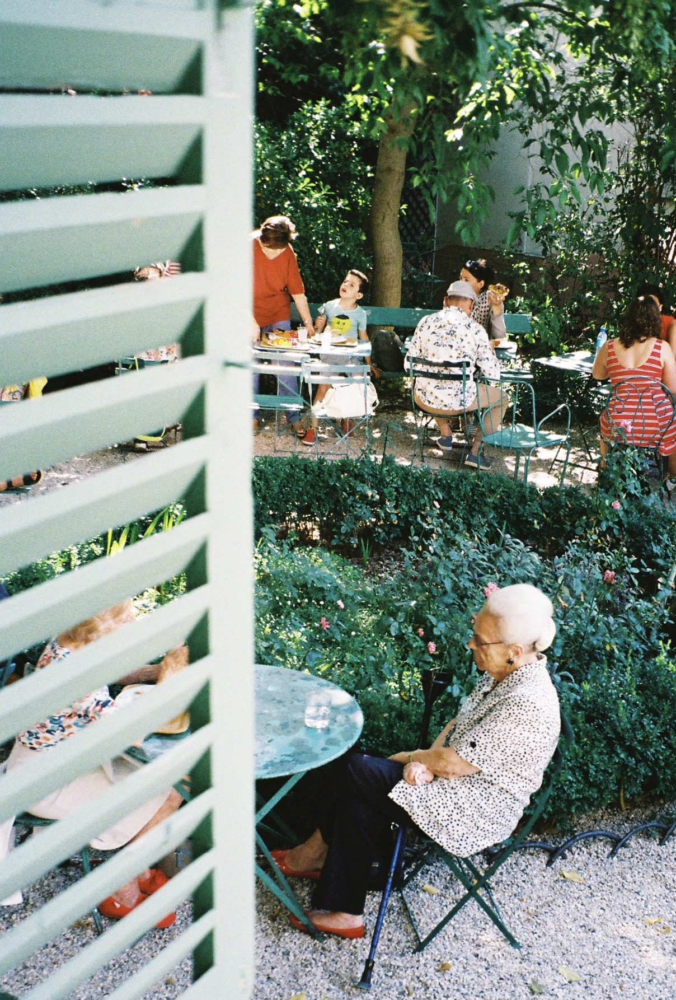

어떤 행위에 있어서 오로지 그 행위 자체만을 위한 행동은 없다. 우리가 하는 모든 사소한 행동에는 사소한 이유들이 있다. 그 중에서 스스로를 미화하는 행위에 초점을 두고 작업을 시작한다.
조금 더 괜찮은 나를 만들기 위해서, 알 수 없는 어떤 죄책감으로부터 벗어나기 위해서, 스스로를 미화하기 위한 행동들.
그러한 미화의 행위는 시각적인 예술과 연결되어질 수 있다고 본다.예술 활동은 창작자가 미적 감각으로 가득한 시각적인 작업물을 창작해서 그 작업물에 의미를 부여하는 동시에 창작자 본인에게도 스스로 가치를 부여한다고 생각한다. 결국 창작자는 스스로의 가치를 높이고 스스로를 미화하기 위해 미화하는 행위를 반복한다. 이를 이기적인 행위면서도 아픈 지구에 사는 사람들이 할 수 있는 가장 최소한의 이기적인 행위로 본다.
